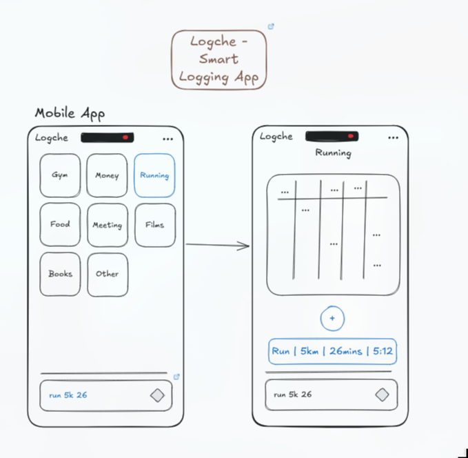
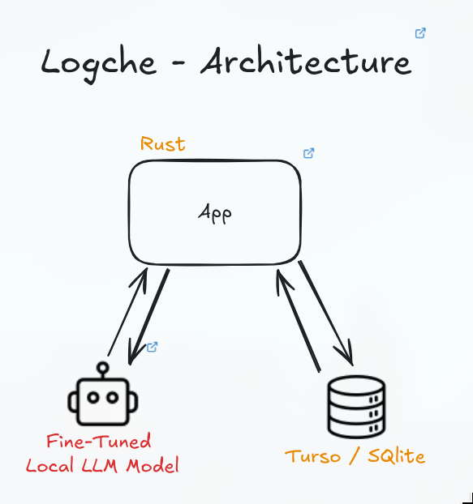
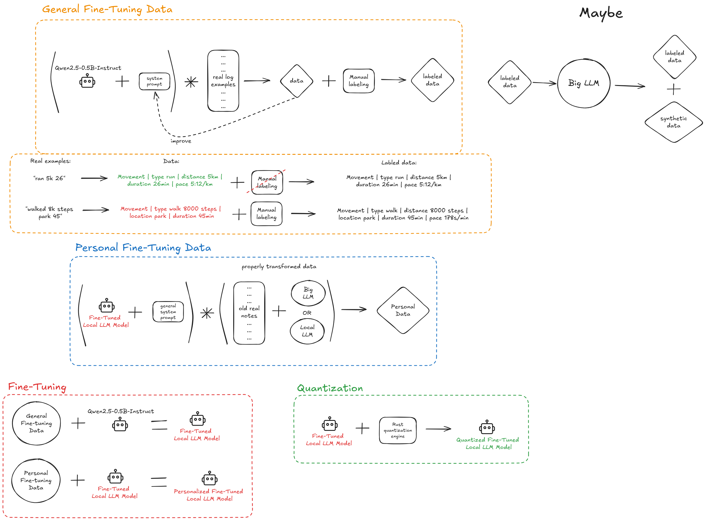
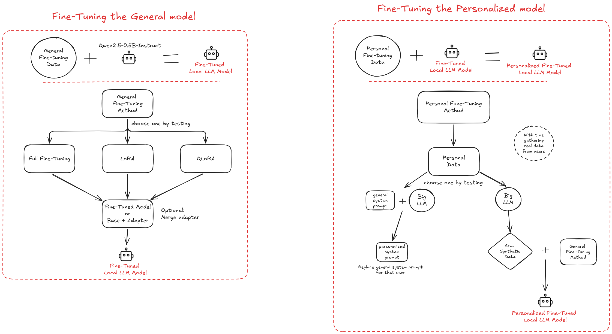
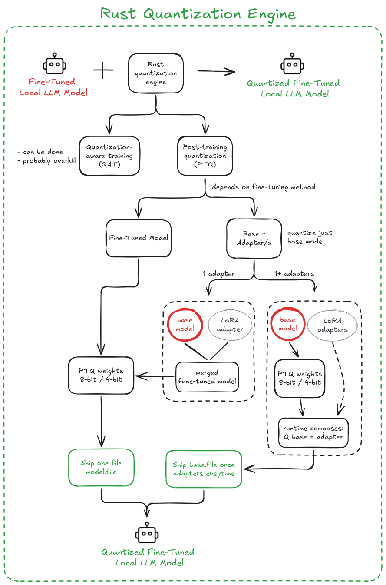

Fast capture
Shorthand reduces the friction of filling out a dedicated form for every kind of event.
Research prototype / local AI
Turn quick shorthand into structured life logs without handing everyday data to a remote service.
Logche explores fine-tuning Qwen-family models and quantizing them with Rust for a small, private, local-first logging system. The site documents the system direction and the working model-engineering tools in this repository.
Logche is my graduation project, and it will be implemented very very soon.
logche.input"intent": "movement",
"type": "run",
"distance_km": 5,
"duration_min": 26,
"pace": "5:12/km"
The idea
Daily tracking is fragmented across workout, money, food, health, media, and productivity apps. Logche keeps the interaction compact: write what happened, review the interpretation, and retain a structured history for later search and statistics.
How: category screens provide context, then one shorthand entry is expanded into fields such as type, distance, duration, and pace. Why: the same quick interaction can cover many kinds of life events without forcing each event into a separate form.

Shorthand reduces the friction of filling out a dedicated form for every kind of event.
The intended normal logging path works offline, keeping personal entries on the device.
Raw text, expanded fields, timestamps, corrections, and statistics-ready values stay together.
Research task
Logche is not only a generic text-generation problem. The documented ML task is joint intent classification and slot filling: identify the kind of log, then extract the typed fields needed for search and statistics.
How: an input such as run 5k 26min felt strong becomes a movement record with a type, distance, duration, pace, and feeling. Why: shorthand is compact for the user but ambiguous for a model, so the output contract must make the intended fields explicit.
Classify inputs as movement, sleep, meal, health, money, media, or another documented log type.
Extract typed values such as times, amounts, units, locations, ratings, sets, reps, and other normalized fields.
zz 11-7 woke 2xSleep | bed 23:00 | woke 07:00 | duration 8h | interruptions 2m 120 coffeeMoney | spent 120 MKD | item coffeerun 5k 26min felt strongMovement | run | 5km | 26min | 5:12/km | feeling strongHow it works
The architecture diagram keeps the boundaries explicit. The mobile app is the user-facing runtime; Rust is the proposed local systems layer; the fine-tuned local model expands shorthand; and SQLite or Turso stores the structured history.
How: the app sends shorthand to the local model through the Rust layer, receives structured data, and saves it in the local database. Why: keeping inference and storage local makes normal logging offline, fast, and private while leaving the UI thin.
Status: documented technical direction. The UI framework is still open between Kotlin and Flutter, and the mobile application is not shipped in this checkout.

Logche/Excalidraw/architecture.excalidraw.md.The user enters shorthand and can correct the model's structured expansion before saving.
Candidate Qwen models are evaluated as the parsing layer rather than relying on a cloud API.
Local storage supports review, filtering, search, statistics, and future personalization.
Training data
The data workflow separates a general model that should work across users from personal adaptation that learns one user's vocabulary, habits, corrections, and repeated patterns. Personal data is intended to stay local whenever possible.
How: real notes become examples, manual labeling turns them into structured targets, and larger or local models can help produce additional training data. Why: explicit labels teach the model the exact fields Logche needs, while separating general and personal data protects user-specific patterns.

"walked 8k steps park 45"Movement | type walk | distance 8000 steps | location park | duration 45 minModel training
The current candidates are Qwen3.5-0.8B, Qwen3-0.6B, and Qwen2.5-0.5B-Instruct. The repository treats the choice as an experiment: compare output quality and local resource use on the same held-out examples.
How: establish prompting as a baseline, then compare LoRA, QLoRA, and full fine-tuning with the same held-out shorthand examples. Why: the smallest model or adapter is useful only if it preserves valid structured output while reducing local memory and startup cost.

Prompt the base model and measure what the system can do before training.
Keep the base model stable and test a small adapter as the practical first training path.
Compare lower-memory QLoRA and full fine-tuning when the evaluation justifies the extra cost.
Rust deployment path
The notes describe a Rust quantization engine as the deployment path. Post-training quantization is the practical first option: validate the unquantized model, convert it to a compact runtime format such as GGUF, and run the same test set again.
How: the proposed path quantizes a merged fine-tuned model into 8-bit or 4-bit weights, or keeps a quantized base with adapters for runtime composition. Why: post-training quantization is simpler to validate first, and repeating the golden tests exposes quality, latency, RAM, and load-time tradeoffs.
Status: research direction. The current Rust implementation is a GGUF metadata reader; a completed quantization engine is not claimed here.

Evaluation methodology
The project notes define what should be measured when comparing prompting, LoRA, QLoRA, full fine-tuning, model candidates, and quantized outputs. This page does not claim benchmark results that are not documented.
How: use one held-out set for every method, then repeat the test after quantization. Why: a smaller local model is useful only when its structured output remains reliable enough for correction, storage, and later analysis.
Valid JSON rate, intent accuracy, field accuracy, and numeric accuracy.
Hallucinated-field rate and the quality of corrections needed before saving.
Latency, RAM usage, model size, and startup or load time.
What is working here
The project is an early prototype and design repository. The product notes describe the mobile logging system, while the repository README identifies the Rust GGUF metadata reader as the main implemented code.
How: the model work is supported by local model inspection and prompt-testing workflows. Why: making the boundary visible helps reviewers understand which claims are implemented artifacts and which claims describe the research system.
Category logging, shorthand expansion, correction, saving, review, and statistics.
Rust metadata reader for inspecting local model files.
Kotlin or Flutter remains an open UI choice in the notes.
Qwen candidates and prompting, LoRA, QLoRA, and full fine-tuning are described.
The notes describe Rust quantization and GGUF deployment paths.